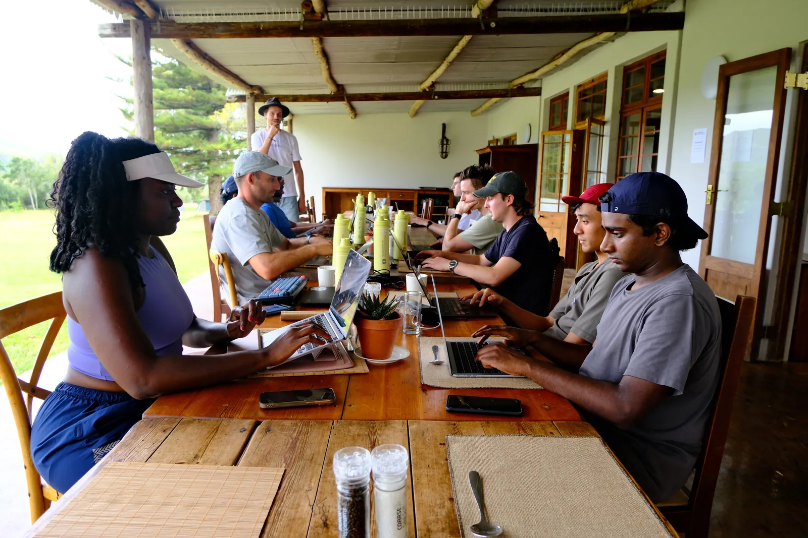

Research projects and publications.

AI capability evaluations
Our in-house team focuses on technical AI governance methods, mainly evaluations, developed in partnership with the UK AI Security Institute.
Offline multi-agent reinforcement learning
Research on the unique risks of multi-agent AI systems, published at NeurIPS, ICLR, and ICML, and supported by a Cooperative AI Foundation PhD Fellowship.
Cooperative AI Research Fellowship outputs
The posters and outputs produced by fellows during our 3-month, in-person research fellowship, connecting them to senior researchers at Google DeepMind, Oxford, MIT, and more.
Browse the posters page →Preparing for a multi-agent world.
AI agents are currently being deployed in vast numbers across the internet without regulatory oversight. We expect the number of agents on the internet to scale exponentially, and for there to be unique failure modes associated with these large systems of heterogenous agents. This is why we are building a Research Lab.
Our Research Bets
The nature of AI progress is highly contested amongst experts and entangled in the deeply uncertain current geopolitical climate. Below we outline our research bets: premises that we find credible and that describe a world that we can impact for the better. We recognise that these claims are controversial and we are enthusiastic about debating them!
Multi-agent
With increasingly autonomous agents being deployed, novel risks from multi-agent interactions arise. Large systems of multiple AI actors pose unique threats that need to be empirically characterised and mitigated. Single-agent safety and alignment techniques will be insufficient for addressing these complex interactions.
Multi-polar
The frontier of AI is incredibly difficult and costly to push, and second movers appear to catch up relatively easily. Currently, it appears that no AI developer is totally dominant, especially as the frontier remains jagged, and the returns of recursive self-improvement have not materialised yet. This, combined with multi-agent dynamics, will likely result in large systems of heterogenous AI agents with distinct incentives.
Alignment by ecosystem
An ecosystem with multiple powerful actors may be more resilient, as they can provide checks and balances on each other. While distributing AI capabilities involves its own risks, it also enables decentralised defence against bad actors (a recent example). These kinds of worlds may be more robust than relying on the benevolence of a singular AI superpower.